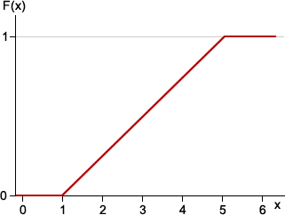
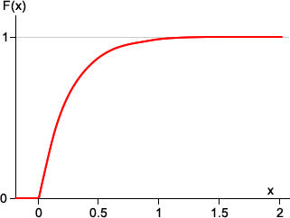

Definition of the cumulative distribution function
The cumulative distribution function of a continuous random variable is defined in exactly the same way as when the variable is discrete.
Definition
The cumulative distribution function (CDF) for a continuous random variable \(X\) is the function
\[F(x) \;=\; P(X \le x)\]This probability can be expressed as an integral. However because \(x\) is the upper limit of the integral, we need to use a different symbol for the integrating variable,
\[F(x) \;\; = \; \; \int_{-\infty}^x f(t)\;dt\]Note that since differentiation is the inverse operation to integration, we can also write
\[f(x) \;\; = \; \; \frac {d}{dx} F(x)\]Shape of the CDF
As for discrete distributions, the cumulative distribution function of a continuous distribution monotonically rises from zero to one. However whereas a discrete distribution's CDF is a step function, that of a continuous distribution is a smooth function.
Example
Sketch the cumulative distribution function of a random variable with a rectangular distribution, \(X \sim \RectDistn(1, 5)\).
The probability density function of \(X\) is
\[ f(x) = \begin{cases} \frac 1 4 & \quad \text{for } 1 \lt x \lt 5 \\[0.2em] 0 & \quad \text{otherwise} \end{cases} \]We first note that \(f(x)\) is zero for \(x \lt 1\). For values of \(x\) between 1 and 5,
\[ F(x) \;\;=\;\; \int_{-\infty}^x f(t)\;dt =\;\; \int_{1}^x f(t)\;dt =\;\; \left[\frac t 4\right]_1^x = \frac {x-1} 4 \]Since values below 1 and above 5 are impossible, the full CDF is:
\[ F(x) = \begin{cases} 0 & \quad \text{for } x \lt 1\\[0.2em] \frac {x-1} 4 & \quad \text{for } 1 \le x \le 5 \\[0.2em] 1 & \quad \text{for } x \gt 5 \end{cases} \]The diagram below sketches F(x).

The next example finds the CDF of a random variable with an exponential distribution.
Example
If \(X\) has probability density function
\[ f(x) = \begin{cases} 4\;e^{-4x} & \quad \text{for } x \ge 0\\[0.2em] 0 & \quad \text{otherwise} \end{cases} \]what is its cumulative distribution function?
Since \(f(x)\) is zero for \(x \lt 0\), \(F(x) = 0\) for all \(x \lt 0\). For \(x \ge 0\),
\[ \begin{align} F(x) \;\;&=\;\; \int_{-\infty}^x f(t)\;dt \\[0.3em] &=\;\; \int_{0}^x {4\;e^{-4t}}\;dt \\[0.3em] &=\;\; \left[-e^{-4t}\right]_0^x \\[0.5em] &=\;\; 1 - e^{-4x} \end{align} \]The full CDF is therefore
\[ F(x) = \begin{cases} 0 & \quad \text{for } x \lt 0\\[0.2em] 1 - e^{-4x} & \quad \text{for } x \ge 0 \end{cases} \]The diagram below sketches F(x).
